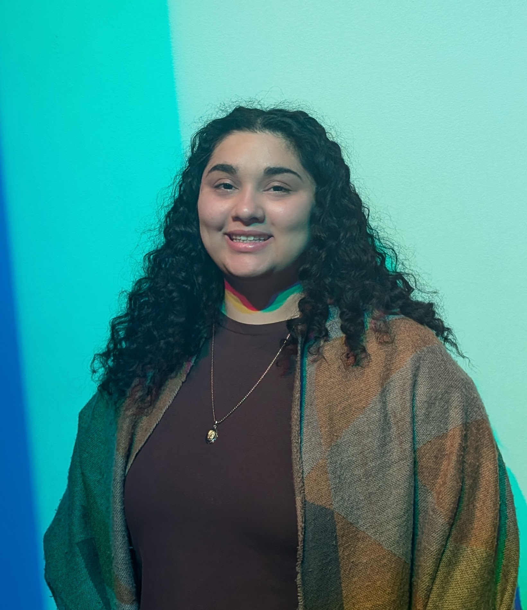

Who am I?
Hey everyone! I am Javiera Granillo Vazquez, an inspiring artist and designer. I am currently receiving my education at UW - Eau Claire for a Bachelor in Fine Arts. My major is Integrative Visual Arts and a minor in Multimedia Communications.
Within my time at University, I have expanded greatly on my digital art skills, hands on work and photography. It has led me to understanding the benefits of attention to the small details, color theory, typography and the sizing/proportions of the piece itself and the media within it. It has elevated my artwork and allowed for organic connection between the piece and the viewer.
I hope to continue my design journey with curiousity and openness to critques.

Work / Volunteer Experience
Hostess/Server at the Informalist
2023 -- Present
This position has given me the opportunity to connect with the Eau Claire community and keep up with the current events occuring in town.
It has expanded my networking, communication, team work and multitasking skills.
Lead Coordinator for the Civil Rights Pilgrimage
2024 -- Present
This position has opened my world to different set of opportunities. It allowed me to gain experience on planning a trip on a large setting with educational activities and brochures.
I gained experience on creative interactive inforgraphics that were informational and easy to read. As well as gaining the experience of creating connections and being opened to the unknown.
Eau Claire Marathon Volunteer
Spring 2024
This position offered me the privilege to experience my hometown in a difference perspective.
It allowed me to connect with others in the community and understand the importance of responsibility and accountability within group activities.
Keep Alabama Beautiful Volunteer
Spring 2024 & 2025
This opportunity allowed me to connect with a different community.
It opened my eyes to the privileges I have encountered in my everyday life and how beneficial it is to give back to other communities.
Participant on the Discovering Difference in Puerto Rico Immersion Program
January 2025
This was a week filled trip with volunteer opportunities every day. They ranged from physical volunteer with cleaning up the beach and communitiy centers to giving back to the community with our time and support.
It was truly a rewarding experience to be immersed and accepted in.
Participant on the Faculty Led Immersion Program to Mendoza, Argentina
Summer 2026
This is an experience I have yet to go on. It will consisted of being immersed into a host family environment and learning about Argentine's history, economics and culture.